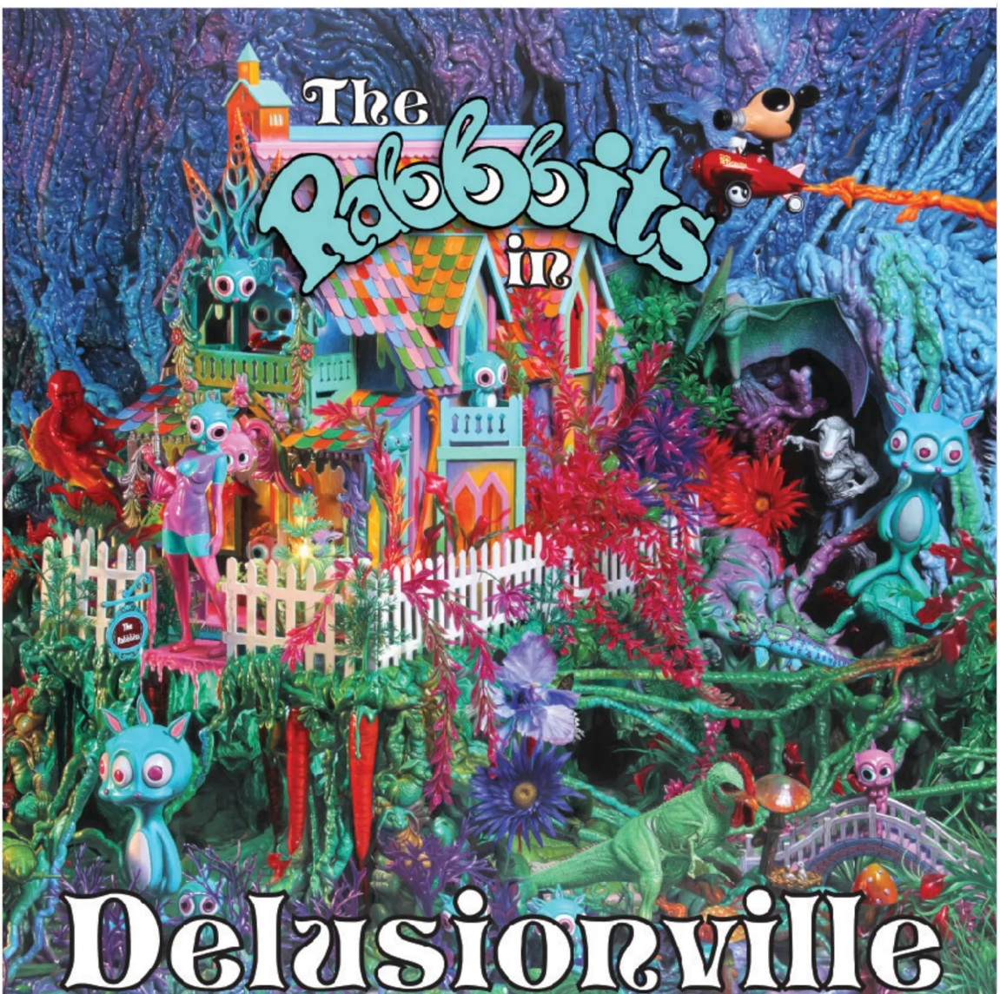

Exhibitions
POPAGANDASTAN – New Works from Ron English, Corey Helford Gallery, Los Angeles, California, US, October 26–November 16, 2013.
Literature
Ron English, Death and the Eternal Forever (Korero Press, 2014), pp. 16, 75. ISBN 978-0957664920.
Ron English, Original Grin: The Art of Ron English (Paris: Cernunnos, 2019), p. 371. ISBN 978-2374950938.
Ron English, Status Factory: The Art of Ron English (San Francisco: Last Gasp of San Francisco, 2014), p. 190. ISBN 978-0867197891.
Notes
The work is documented on Corey Helford Gallery’s dedicated exhibition object page for Quack House Duck Pond, under RON ENGLISH POPAGANDASTAN, accessed April 8, 2026.
This composition was later repurposed by the artist as a limited-edition print in the Vinyl Chord: A Revolutionary Record Store series; see the related print on Artsy.
